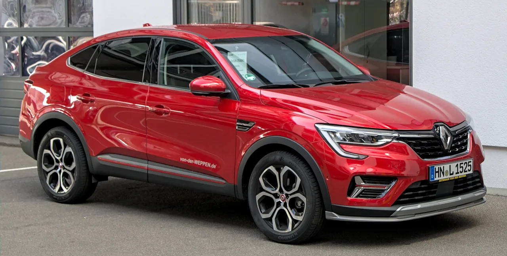

▲ 필랑트는 르노코리아 부산공장에서 생산된다 ⓒ Wikimedia Commons
르노 필랑트 1.5 HEV가 실사용자 평가에서 9.62점을 받았습니다. 10점 만점입니다.
표본은 자동차 플랫폼 페이마이카에 등록된 오너 168명입니다.
항목별로 뜯어보면 순위가 보입니다. 가장 높은 것은 디자인, 가장 낮은 것은 가격 만족도였습니다.
1. 점수표
| 순위 | 항목 | 점수 |
|---|---|---|
| 1 | 디자인 | 9.83점 |
| 2 | 주행 성능 | 9.81점 |
| 3 | 거주성 | 9.63점 |
| 4 | 품질 | 9.61점 |
| 5 | 제조 안내 | 9.5점 |
| 6 | 가격 만족도 | 9.33점 |
| 종합 | 9.62점 | |
모든 항목이 9.3점을 넘습니다. 절대 수치만 보면 전 항목이 높습니다.
그래서 의미가 있는 것은 항목 간 순서입니다. 최고점(9.83)과 최저점(9.33)의 차이는 0.5점입니다.
2. 이런 점수를 읽는 법
오너 대상 만족도 조사는 구조적으로 높게 나옵니다.
| 요인 | 내용 |
|---|---|
| 선택 편향 | 그 차를 고른 사람들이 평가한다 |
| 인지 부조화 | 큰돈을 쓴 결정을 스스로 정당화하려는 경향 |
| 응답 편향 | 만족한 사람이 평가를 남길 확률이 높다 |
| 표본 규모 | 168명 — 통계적으로 크지 않다 |
그래서 "9.62점이니 좋은 차"라는 결론은 성급합니다. 다른 차의 같은 조사 점수와 비교해야 의미가 생깁니다.
대신 항목 간 상대 순위는 편향의 영향을 덜 받습니다. 같은 사람이 같은 척도로 매긴 점수이기 때문입니다.
3. 가격 만족도가 꼴찌라는 것
가격 만족도 9.33점은 전 항목 중 최저입니다.
이 순위는 자주 나타납니다. 차 자체는 마음에 드는데 값이 아깝다고 느끼는 구조입니다.
| 요인 | 내용 |
|---|---|
| 비교 대상 | 같은 값의 국산 SUV가 사양이 많다 |
| 하이브리드 프리미엄 | 동급 가솔린 대비 가격 차이 |
| 브랜드 | 르노코리아의 잔가 인식 |
| 할인 | 구매 시점의 프로모션 조건에 따라 체감이 갈린다 |
디자인이 1위(9.83)라는 점과 함께 보면 성격이 뚜렷해집니다. 보고 반해서 샀는데 값은 조금 부담스러웠다는 구매 패턴입니다.

▲ 르노코리아는 부산공장에서 내수와 수출 물량을 함께 만든다
4. "싼타페에서 넘어왔다"는 후기
보도에 인용된 한 오너의 후기가 이 차의 성격을 보여줍니다.
출고 3개월 차인 이 오너는 "기존 SUV 대비 승차감과 운전 피로도 면에서 확실한 차이"를 느꼈다고 했습니다. 특히 장거리 주행에서 승차감이 돋보였다는 평가입니다.
| 항목 | 해석 |
|---|---|
| 승차감 | 서스펜션 세팅이 무른 쪽일 가능성 |
| 운전 피로도 | 시트 형상, 소음, 하이브리드의 정숙성 |
| 장거리 | 고속 안정성과 노면 소음 차단 |
| 주행 성능 9.81점 | 여기서의 '성능'은 가속이 아니라 편안함에 가깝다 |
마지막 항목이 중요합니다. 주행 성능 9.81점이라는 숫자를 "빠르다"로 읽으면 오해입니다. 1.5리터 하이브리드 SUV입니다.
이 점수는 "운전하기 편하다"에 대한 평가로 읽는 편이 정확합니다. 마쓰다 CX-5가 무스 테스트에서 롤이 크다는 지적을 받으면서도 "예측 가능하고 일관되다"는 평을 받은 것과 비슷한 맥락입니다.
5. 필랑트가 놓인 자리
필랑트는 르노코리아 부산공장에서 생산됩니다. 내수와 수출을 함께 담당하는 라인입니다.
본지는 8월 8일 필랑트 847대가 마산항에서 중남미로 떠난 소식을 전한 바 있습니다. 수출 모델이면서 국내에서도 팔리는 구조입니다.
| 항목 | 내용 |
|---|---|
| 생산 | 부산공장 — 내수 + 수출 |
| 노사 | 2026년 임단협 잠정합의, 8월 26일 사원총회 투표 |
| 라인업 | 그랑 콜레오스, 아르카나, QM6, 필랑트 등 |
8월 26일 임단협 투표 결과가 생산 일정에 직접 영향을 줍니다. 출고 대기 중인 고객이라면 함께 볼 사안입니다.

▲ 8월 26일 임단협 투표 결과가 부산공장 생산 일정에 영향을 준다

▲ 오너 대상 만족도 조사는 구조적으로 높게 나온다는 점을 감안해야 한다
6. 정리
르노 필랑트 1.5 HEV가 페이마이카 등록 오너 168명의 평가에서 종합 9.62점을 받았습니다.
항목별로는 디자인 9.83점, 주행 성능 9.81점, 거주성 9.63점, 품질 9.61점, 제조 안내 9.5점, 가격 만족도 9.33점 순입니다.
최고점이 디자인, 최저점이 가격 만족도라는 순서가 이 차의 성격을 보여줍니다. 싼타페에서 갈아탄 오너는 승차감과 운전 피로도의 차이를 이유로 들었습니다. 다만 표본 168명은 통계적으로 크지 않고, 오너 대상 조사는 구조적으로 높게 나온다는 점을 함께 감안해야 합니다.